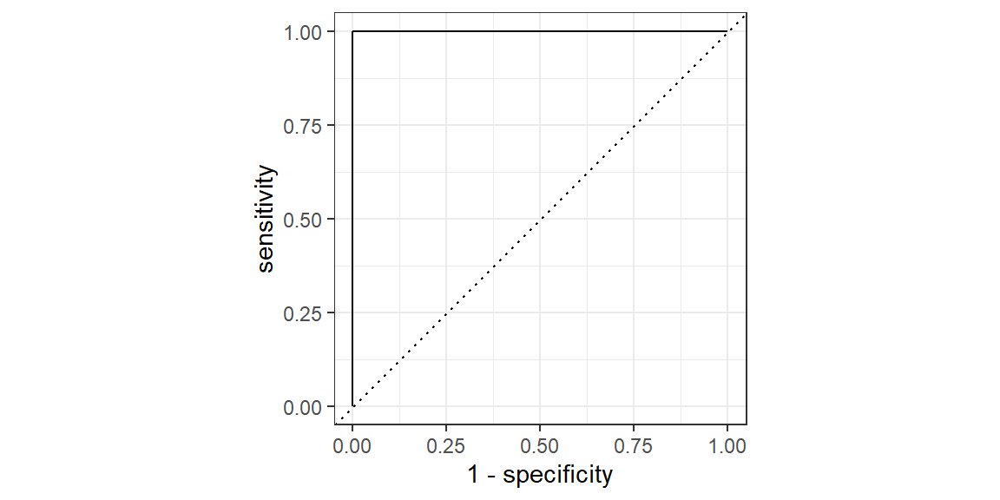

3 Logistic Regression
Logistic regression is a powerful statistical method used for modeling the relationship between a dependent variable and one or more independent variables, where the dependent variable is categorical. It is particularly useful in cases where the dependent variable is binary (i.e., it can take only two possible outcomes, often coded as 0 and 1). The goal of logistic regression is to find the best fitting model to describe the relationship between the dichotomous characteristic of interest (dependent variable) and a set of independent variables.
3.1 Key Concepts of Logistic Regression:
Binary Outcome: Binary outcomes are central to the concept of logistic regression, a statistical method tailored for scenarios where the outcome variable is dichotomous, meaning it has two possible states such as “yes” or “no,” “success” or “failure,” or is represented numerically as 0 and 1. This characteristic is pivotal for modeling and analyzing situations where the response is bifurcated and does not adhere to a continuous scale. Logistic regression excels in these settings by estimating the probability that a given input set belongs to a particular category (e.g., success or failure).
Examples of Binary Outcome Applications
Medical Diagnosis: In the medical field, logistic regression can be used to predict the presence or absence of a disease based on various predictors, such as age, sex, blood pressure, cholesterol levels, and other clinical measurements. For instance, it could model the likelihood of a patient having heart disease, where 1 represents the presence of heart disease and 0 represents its absence.
Email Spam Filtering: This application involves classifying emails as spam (1) or not spam (0), based on features extracted from the emails, such as the frequency of certain words, the presence of specific phrases, or the sender’s details. Logistic regression can be trained on a dataset of emails that have been manually classified to predict the categorization of new, unseen emails.
Credit Approval Processes: Financial institutions often use logistic regression to predict the probability of a loan applicant defaulting on a loan. The binary outcome would be default (1) or no default (0), with predictors including credit score, income level, employment history, and other financial metrics.
Customer Churn Prediction: Companies use logistic regression to identify the likelihood of a customer discontinuing service or subscription, where 1 indicates churn (the customer leaves) and 0 indicates retention (the customer stays). Predictive factors might include usage patterns, customer service interactions, payment history, and satisfaction levels.
Political Election Outcomes: In the context of binary electoral outcomes (win or lose), logistic regression can analyze polling data to predict whether a candidate will win (1) or lose (0) an election. The model might consider variables such as voter demographics, campaign spending, and historical voting patterns.
These examples underscore the versatility and practicality of logistic regression in handling binary outcomes across various domains, providing valuable insights and predictions that aid in decision-making processes.
Odds Ratio
In logistic regression, the odds ratio is used to measure the association between a predictor variable and the probability of a particular outcome. Specifically, the odds ratio (OR) quantifies how the odds of the outcome change with a one-unit increase in the predictor variable, assuming all other variables in the model are held constant.
The odds of an event is defined as the probability of the event occurring divided by the probability of the event not occurring. Mathematically, if \(p\) represents the probability of the event, then the odds are given by \(\frac{p}{1-p}\).
An odds ratio of:
- OR = 1 suggests there is no association between the predictor and the outcome.
- OR > 1 indicates that the event is more likely to occur as the predictor increases.
- OR < 1 suggests that the event is less likely to occur as the predictor increases.
Examples of Odds Ratio
Medical Research: Suppose a study investigates the effect of a new drug on reducing the risk of a disease. If the odds of the disease in the group receiving the drug are 0.5 and the odds in the placebo group are 1.0, the odds ratio is 0.5. This means the odds of getting the disease are 50% lower in the drug group compared to the placebo group.
Educational Study: In an educational context, consider a study examining the effect of a special tutoring program on passing an exam. If students in the tutoring program have odds of passing the exam of 3 (i.e., they are three times as likely to pass than fail) and the odds for students not in the program are 1 (equal likelihood of passing and failing), the odds ratio is 3. This suggests that students in the tutoring program are three times as likely to pass the exam compared to those not in the program.
Market Research: A market research might explore the influence of customer satisfaction on the likelihood of repeat purchases. If the odds of making a repeat purchase for satisfied customers are 2 (twice as likely to repurchase as not) and for unsatisfied customers the odds are 0.5, the odds ratio would be 4 (2 divided by 0.5). This indicates that satisfied customers are four times as likely to make a repeat purchase compared to unsatisfied customers.
Understanding and correctly interpreting the odds ratio in logistic regression allows for meaningful insights into the relationship between variables and outcomes. By quantifying how changes in predictor variables affect the odds of a particular outcome, researchers and practitioners can make informed decisions and predictions across various fields including medicine, education, and business.
Sigmoid Curve
The Sigmoid Curve, characterized by its S-shaped curve, is used in logistic regression to model the probability that a given input belongs to a particular category (e.g., success or failure). This curve ranges between 0 and 1, making it an effective tool for representing probabilities in binary outcomes. The formula for the logistic function is:
\[ P(Y=1) = \frac{1}{1 + e^{-(\beta_0 + \beta_1X)}} \]
where:
- \(P(Y=1)\) is the probability that the dependent variable equals 1 (e.g., success, presence of a condition).
- \(e\) is the base of the natural logarithm.
- \(\beta_0\) and \(\beta_1\) are the coefficients that the model estimates.
- \(X\) is the independent variable.
The logistic function essentially transforms linear combinations of predictors into probabilities by taking values from \(-\infty\) to \(+\infty\) and mapping them into a (0, 1) range.
The function that links the linear combination to the sigmoid curve is called the link function. There are a number of possible link functions that could be used. The one we will use (and the one presented in the equation above) is called the logit link function.
Estimation
In logistic regression, the estimation of model coefficients is a crucial step that directly influences the accuracy and interpretability of the model’s predictions. The process relies on Maximum Likelihood Estimation (MLE), a statistical method used to estimate the parameters of a statistical model. MLE works by finding the parameter values that maximize the likelihood function, which measures how probable the observed data is, given a set of parameter values.
The likelihood function for a logistic regression model is a product of individual probabilities, each representing the likelihood of observing a particular outcome (e.g., success or failure) for a given set of predictor values. The goal of MLE is to adjust the model’s coefficients (parameters) such that this product of probabilities (likelihood) is maximized across all observations in the dataset.
A practical way to visualize the MLE process is by plotting the likelihood function over a range of values for a model coefficient. Initially, the likelihood might be low for arbitrary coefficient values. However, as the MLE algorithm iterates, adjusting the coefficients to maximize the likelihood, we can observe the likelihood function reaching a peak. This peak represents the maximum likelihood estimates of the model coefficients, providing the best fit to the observed data.
By employing MLE, logistic regression models can accurately estimate the probability of binary outcomes based on a set of predictors. This method’s ability to find the most likely parameter values for a given dataset makes it a powerful tool in the hands of data analysts and researchers across various fields.
Interpretation
In logistic regression, the coefficients obtained from the model provide the log odds of the dependent variable being 1 (for binary outcomes) for a one-unit increase in the predictor variable, keeping all other predictors constant. This log odds can be a bit abstract, so it’s common to convert these log odds into odds ratios by exponentiating the coefficients. This makes interpretation more intuitive:
Odds Ratio (OR) > 1: Indicates that the likelihood of the event (outcome=1) increases with a one-unit increase in the predictor.
Odds Ratio (OR) < 1: Suggests that the likelihood of the event decreases with a one-unit increase in the predictor.
Odds Ratio (OR) = 1: Means there is no effect of the predictor on the likelihood of the event.
Example 1: Health Research: Suppose a logistic regression model is developed to study the impact of smoking (predictor variable) on the likelihood of developing heart disease (outcome variable). If the coefficient for smoking is 0.5, exponentiating this gives an odds ratio of exp(0.5) ≈ 1.65. This can be interpreted as smokers having a 65% higher odds of developing heart disease compared to non-smokers, holding all other variables constant.
Example 2: Marketing Analytics: Consider a model analyzing the impact of online ad exposure (predictor) on the probability of a purchase (outcome). If the coefficient for ad exposure is -0.3, the odds ratio is exp(-0.3) ≈ 0.74. This suggests that with each additional exposure to the ad, the odds of making a purchase decrease by 26%, assuming all other factors remain constant.
Example 3: Education: A logistic regression could examine the effect of study hours (predictor) on passing an exam (outcome). If the coefficient for study hours is 0.2, the odds ratio is exp(0.2) ≈ 1.22. This means for each additional hour of study, the odds of passing the exam increase by 22%, with other factors held constant.
Interpreting logistic regression coefficients through odds ratios provides valuable insights into the influence of predictors on an outcome. It helps in understanding which factors are more critical and how changes in these factors can increase or decrease the likelihood of the outcome. This makes logistic regression a powerful tool for decision-making in various fields such as health, marketing, and education, allowing practitioners to make informed decisions based on quantifiable evidence.
3.2 Implementing Logistic Regression with tidymodels
When implementing logistic regression with tidymodels, you typically follow these steps:
-
Data Preprocessing: Before fitting a logistic regression model, data must be cleaned and prepared. tidymodels offers the
recipespackage for this purpose, enabling feature engineering, normalization, and data splitting. A typical workflow might involve:
- Creating a recipe: Specify preprocessing steps such as normalization, dummy variable creation for categorical variables, and missing data imputation.
-
Data splitting: Use
rsampleto split the data into training and testing sets, ensuring that the model can be trained on one subset and validated on another to test its generalizability.
Example: In this example, we’ll use the palmerpenguins dataset, specifically aiming to predict the species of penguins based on physical measurements. The dataset includes variables such as bill length, bill depth, flipper length, body mass, and sex.
Loading the Dataset
First, ensure the palmerpenguins package is installed and loaded, along with tidymodels.
Initial Dataset Examination
Examine the dataset to understand its structure and identify any preprocessing needs.
glimpse(penguins)Rows: 344
Columns: 7
$ species <fct> Adelie, Adelie, Adelie, Adelie, Adelie, Adelie, Adel…
$ island <fct> Torgersen, Torgersen, Torgersen, Torgersen, Torgerse…
$ bill_length_mm <dbl> 39.1, 39.5, 40.3, NA, 36.7, 39.3, 38.9, 39.2, 34.1, …
$ bill_depth_mm <dbl> 18.7, 17.4, 18.0, NA, 19.3, 20.6, 17.8, 19.6, 18.1, …
$ flipper_length_mm <int> 181, 186, 195, NA, 193, 190, 181, 195, 193, 190, 186…
$ body_mass_g <int> 3750, 3800, 3250, NA, 3450, 3650, 3625, 4675, 3475, …
$ sex <fct> male, female, female, NA, female, male, female, male…We can see right away that there are some missing values. Let’s remove these observations. We will also make the species binary since we are doing logistic regression and species has three levels in this dataset. We will only model species as chinstrap or other (not chinstrap).
penguins = drop_na(penguins)
penguins = penguins |>
mutate(
species = factor(if_else(species=="Chinstrap", "Chinstrap", "Other"))
)
glimpse(penguins)Rows: 333
Columns: 7
$ species <fct> Other, Other, Other, Other, Other, Other, Other, Oth…
$ island <fct> Torgersen, Torgersen, Torgersen, Torgersen, Torgerse…
$ bill_length_mm <dbl> 39.1, 39.5, 40.3, 36.7, 39.3, 38.9, 39.2, 41.1, 38.6…
$ bill_depth_mm <dbl> 18.7, 17.4, 18.0, 19.3, 20.6, 17.8, 19.6, 17.6, 21.2…
$ flipper_length_mm <int> 181, 186, 195, 193, 190, 181, 195, 182, 191, 198, 18…
$ body_mass_g <int> 3750, 3800, 3250, 3450, 3650, 3625, 4675, 3200, 3800…
$ sex <fct> male, female, female, female, male, female, male, fe…Creating a Recipe
- Define the outcome variable and predictors.
- Specify preprocessing steps, such as normalization for numerical variables and encoding for categorical variables.
penguin_recipe = recipe(species ~ bill_length_mm + bill_depth_mm +
flipper_length_mm + body_mass_g + sex,
data = penguins) |>
step_normalize(all_numeric_predictors()) |>
step_dummy(all_nominal_predictors())Data Splitting
Split the data into training and testing sets to prepare for model training and evaluation.
set.seed(123)
penguin_split = initial_split(penguins, prop = 0.75)
penguin_train = training(penguin_split)
penguin_test = testing(penguin_split)Preparing Processed Data
Apply the recipe to the training data to prepare it for model fitting.
prepared_data = prep(penguin_recipe, training = penguin_train) |>
bake(new_data = NULL)By following these steps, you will have effectively prepared your dataset for logistic regression analysis with tidymodels. This preprocessing includes normalization and encoding necessary for the logistic regression model to properly interpret and learn from the data.
-
Model Specification with parsnip: After preparing the dataset, the next step in implementing logistic regression with
tidymodelsis to specify the model. We use theparsnippackage for this purpose, which offers a unified interface for model specification across various modeling techniques, including logistic regression. Thelogistic_reg()function is utilized to specify a logistic regression model, which can be customized with engine-specific options according to the analysis needs.
Example: Continuing with the palmerpenguins dataset example, we aim to predict the species of a penguin based on measurements like bill length, bill depth, flipper length, body mass, and sex. Given that the species prediction is a classification task, we specify a logistic regression model for binary or multinomial outcomes, depending on the number of species we wish to distinguish between.
Specify a logistic regression model using parsnip. For this example, we focus on a binary classification, though the palmerpenguins dataset allows for multinomial classification as well.
# Specify a logistic regression model
penguin_model = logistic_reg() |>
set_engine("glm") |>
set_mode("classification")- Model Fitting: Fit the model to the training data. This step involves estimating the model coefficients using the data prepared in the previous steps.
# Fit the model to the training data
penguin_fit = fit(penguin_model, species ~ bill_length_mm +
bill_depth_mm + flipper_length_mm +
body_mass_g + sex,
data = penguin_train)This command initiates the fitting process, where the glm engine estimates the coefficients that best predict the penguin species from the specified predictors. The set_mode("classification") indicates that we are dealing with a classification problem, aiming to categorize penguins into different species.
- Summary and Interpretation: Once the model is fitted, we can summarize its findings to understand the impact of each predictor on the species classification.
# Summarize the model fit
tidy(penguin_fit)# A tibble: 6 × 5
term estimate std.error statistic p.value
<chr> <dbl> <dbl> <dbl> <dbl>
1 (Intercept) 73.2 38.0 1.93 0.0538
2 bill_length_mm -2.75 1.21 -2.27 0.0231
3 bill_depth_mm -1.22 0.718 -1.70 0.0893
4 flipper_length_mm 0.0622 0.121 0.514 0.607
5 body_mass_g 0.0151 0.00721 2.10 0.0359
6 sexmale 5.99 4.24 1.41 0.158 The summary output will provide insights into the relationship between the predictors and the probability of a penguin belonging to a specific species. Coefficients with positive values indicate an increase in the likelihood of a penguin belonging to the target species with an increase in the predictor variable, while negative coefficients suggest the opposite.
We can obtain the impact on the odds ratio for each coefficient:
tidy(penguin_fit, exponentiate = TRUE)# A tibble: 6 × 5
term estimate std.error statistic p.value
<chr> <dbl> <dbl> <dbl> <dbl>
1 (Intercept) 6.14e+31 38.0 1.93 0.0538
2 bill_length_mm 6.42e- 2 1.21 -2.27 0.0231
3 bill_depth_mm 2.95e- 1 0.718 -1.70 0.0893
4 flipper_length_mm 1.06e+ 0 0.121 0.514 0.607
5 body_mass_g 1.02e+ 0 0.00721 2.10 0.0359
6 sexmale 4.01e+ 2 4.24 1.41 0.158 -
Model Evaluation: After fitting our logistic regression model to the penguin dataset, we aim to evaluate its performance to understand how well it predicts penguin species. We will use the
yardstickpackage to compute the accuracy and ROC AUC of our model on the test set, and then generate a confusion matrix for a detailed breakdown of prediction results.
# Load necessary library
library(yardstick)
# Make predictions on the test set
penguin_pred = predict(penguin_fit, new_data = penguin_test,
type = "prob")
penguin_class = predict(penguin_fit, new_data = penguin_test,
type = "class")
penguin_results = bind_cols(penguin_test, penguin_pred, penguin_class)
# Calculate Accuracy
penguin_results |>
metrics(truth = species, estimate = .pred_class) |>
filter(.metric == "accuracy")# A tibble: 1 × 3
.metric .estimator .estimate
<chr> <chr> <dbl>
1 accuracy binary 0.988#plot ROC
penguin_results |>
roc_curve(truth = species, .pred_Chinstrap) |>
autoplot()
# Calculate ROC AUC
penguin_results |>
roc_auc(truth = species, .pred_Chinstrap)# A tibble: 1 × 3
.metric .estimator .estimate
<chr> <chr> <dbl>
1 roc_auc binary 1# Generate and display a Confusion Matrix
penguin_conf_matrix = penguin_results |>
conf_mat(truth = species, estimate = .pred_class)
penguin_conf_matrix Truth
Prediction Chinstrap Other
Chinstrap 20 0
Other 1 63In this example: - We predict the species of penguins in the test set using our fitted logistic regression model. - We compute the accuracy of our predictions, providing a simple metric that indicates the overall proportion of correct predictions. - We calculate the ROC AUC (Area Under the Receiver Operating Characteristic Curve), which provides a measure of model performance across all classification thresholds. This metric is particularly useful for evaluating binary classification models in scenarios with imbalanced class distributions. - We generate a confusion matrix, offering a detailed view of the model’s predictions, including true positives, false positives, true negatives, and false negatives. This matrix helps us understand the types of errors our model is making.
This approach to model evaluation offers a comprehensive view of performance, balancing simplicity with depth of insight, and equips us with the information needed to make informed decisions about potential model improvements.
-
Model Tuning: Model tuning aims to optimize the performance of a logistic regression model by systematically searching for the best hyperparameter values. In this example, we focus on using regularization to prevent overfitting and improve model generalizability. Regularization adds a penalty to the size of coefficients to shrink them towards zero, thus simplifying the model. We will use the
glmnetengine, which supports both L1 (lasso) and L2 (ridge) regularization, and thetunepackage to find the optimal mix of regularization type and strength.
Specify the Model with Regularization Parameters
First, we specify a logistic regression model and indicate that the regularization parameters penalty (lambda) and mixture (alpha) are to be tuned.
Define the Tuning Grid
We define a tuning grid that specifies a range of values for penalty and a set of values for mixture. The penalty controls the strength of the regularization, while the mixture determines the balance between L1 and L2 regularization.
Cross-Validation Setup
We prepare for cross-validation by splitting the data into training and testing sets and defining the resampling method.
set.seed(123)
data_split = initial_split(penguins, prop = 0.75)
cv_folds = vfold_cv(training(data_split), v = 5)Model Tuning
Using the tune_grid() function, we search over the grid of hyperparameters within the cross-validation framework to find the combination that maximizes the model’s performance, typically using accuracy or ROC AUC as the criterion.
tune_results = tune_grid(
object = workflow() |>
add_recipe(penguin_recipe) |>
add_model(logistic_spec),
resamples = cv_folds,
grid = tuning_grid,
metrics = metric_set(roc_auc, accuracy)
)Select Best Hyperparameters
After the tuning process, we identify the best hyperparameters based on the chosen performance metric.
best_params = tune_results |> select_best(metric = "accuracy")
best_params# A tibble: 1 × 3
penalty mixture .config
<dbl> <dbl> <chr>
1 1.00 0.1 Preprocessor1_Model001Finalize the Model
With the best hyperparameters identified, we finalize the model by fitting it to the full training set using these parameters.
final_model = finalize_workflow(
workflow() |>
add_recipe(penguin_recipe) |>
add_model(logistic_spec),
best_params
) |>
fit(data = training(data_split))This model tuning example demonstrates how to systematically explore the hyperparameter space to find the optimal settings for a logistic regression model, enhancing its predictive performance and generalizability.
3.3 Advanced Considerations
3.3.1 Feature Interactions
- In-depth Exploration: Beyond simply investigating interactions, it’s crucial to understand the nature and extent of the effect these interactions have on the outcome. This involves exploring different combinations of features to see if they produce synergistic (where the combined effect is greater than the sum of individual effects) or antagonistic interactions (where the combined effect is less than expected).
-
Practical Implementation: Use the
step_interact()function in therecipespackage to create new interaction terms in your dataset. It’s important to limit the number of interaction terms to avoid overfitting and to focus on interactions that are theoretically plausible or supported by previous research. - Visualization and Interpretation: Visualize these interactions using interaction plots or partial dependence plots to better understand their effects on the predicted outcome. This helps in interpreting the model in the context of these interactions and making more informed decisions.
3.3.2 Model Resampling
- Advanced Techniques: Explore beyond basic bootstrapping or k-fold cross-validation by incorporating techniques like stratified sampling or repeated cross-validation, which can provide more robust estimates of model performance, especially in datasets with imbalanced classes or complex structures.
- Impact Analysis: Evaluate how different resampling strategies affect model stability and performance. This can be done by comparing metrics across different resampling techniques and noting variations in model performance, which can inform the choice of the most appropriate resampling strategy.
-
Software Implementation: Utilize the
rsamplepackage withintidymodelsto implement advanced resampling techniques. Functions likevfold_cv()for cross-validation andbootstraps()for bootstrapping are highly customizable and can be adapted to specific requirements.
3.3.3 Post-modeling Analysis
- Diagnostic Tools: Expand the toolbox for model diagnostics by including techniques like variance inflation factor (VIF) to check for multicollinearity, residual plots for heteroscedasticity, and influence plots to identify outliers or influential observations that could unduly affect the model.
- Model Comparison and Selection: Beyond diagnostics, employ model comparison techniques such as Akaike Information Criterion (AIC) or Bayesian Information Criterion (BIC) for logistic regression models to select the model that best balances fit and complexity.
- Sensitivity Analysis: Conduct sensitivity analyses to understand how changes in model inputs or assumptions affect outcomes. This can involve scenarios like changing the threshold for classification, altering the class balance, or simulating variations in predictor variables.
3.3.4 Additional Considerations
-
Model Interpretability: Leverage tools like
vip(Variable Importance Plots) andDALEXto enhance model interpretability, providing insights into which features are driving predictions and how changes in feature values affect the predicted outcome. - Deployment and Monitoring: Outline strategies for deploying logistic regression models in real-world applications, including considerations for model updating, monitoring model performance over time, and dealing with concept drift.
- Ethical Considerations: Address potential ethical issues, such as bias and fairness, in logistic regression models. This includes assessing the model for disparate impact on different groups and taking steps to mitigate any identified biases.